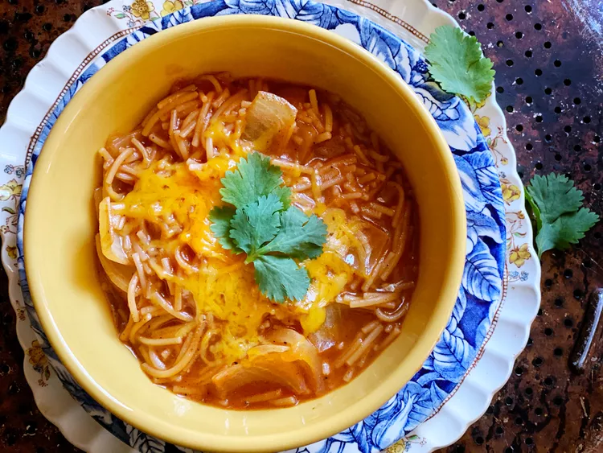

This fideo recipe was given to me by my mother-in-law. It goes great with any meat dish, including carne asada. I use this recipe in place of rice as my side dish.

Ingredients
2 tablespoons vegetable oil
1 (8 ounce) package fideo pasta
1 ½ cups water, divided
1 (8 ounce) can tomato sauce, divided
1 tablespoon chili powder
½ teaspoon ground cumin
½ teaspoon garlic salt
Directions
Heat oil in a saucepan over medium-high heat. Add fideo; cook and stir until browned.
Add 1 cup water and 1/2 of the tomato sauce to fideo. Season with chili powder, cumin, and garlic salt; stir to blend. Bring to a boil and cook until liquid has almost evaporated.
Stir in remaining 1/2 cup water and remaining tomato sauce. Cover and cook over medium heat until fideo is tender and sauce thickens, about 10 minutes.